Учёт стоит на цех, а не на печь
Видно общую сумму за месяц. Не видно, какая печь и какой режим съедают лишнее. Спорить с цифрой невозможно, потому что цифры нет.

· промышленные термические технологииМероприятия с подтверждённым эффектом собираются из данных ваших же печей. Перерасход считаем в кубометрах, киловатт-часах и рублях по вашим тарифам — не по среднеотраслевым нормам из справочника.
Два дня. Без остановки производства и без комиссии в цеху.
Модернизация требует обоснования. Обоснование требует цифр. Цифр нет — хотя данные, из которых они считаются, на заводе уже есть.
Видно общую сумму за месяц. Не видно, какая печь и какой режим съедают лишнее. Спорить с цифрой невозможно, потому что цифры нет.
По факту: перетопы, холостой ход между садками, долгие открытые двери, выдержка «с запасом». Платят за это каждый день, не считает никто.
Температурные кривые месяцами ложатся на регистраторы и в АСУ мёртвым грузом. Там уже записано, где именно теряются деньги.
Перерасход виден в счёте за газ, несоответствие режима — в переделке партии. Причина у них общая, и находится она в тех же данных.
Накладываем фактические режимы работы печей на паспортные, отделяем реальные отклонения процесса от шума термопары и переводим разницу в деньги — по вашим тарифам, в годовом масштабе.
Печь, режим, операция. Не «по участку в среднем», а с точностью до садки и участка кривой.
Кубометры, киловатт-часы и рубли по вашим счетам, а не по средним по рынку.
По каждому — оценка эффекта, ориентировочные затраты и срок окупаемости. В том виде, в каком это можно нести директору и вносить в план.
Часть перерасхода снимается корректировкой режима и организацией работы, без единого рубля капзатрат. Если это ваш случай — скажем прямо.
Ровно то, что каждый день пишет регистратор и никто не открывает. Ниже — двое суток работы камерной печи: температура минута за минутой, паспортный режим и журнал садок. Нажмите на подсвеченный участок.
Данные демонстрационные. Архив синтезирован по типовому режиму камерной печи — это не архив вашего и не архив чужого завода, и никакой экономии он не обещает. Настоящие здесь две вещи: алгоритм, который ищет отклонения, и формулы, которыми они переводятся в деньги. Тариф и число рабочих суток подставьте свои.
График прокручивается вбок пальцем
Нужна выгрузка с регистратора или АСУ, техкарта, счета и сменные журналы. Первая печь — бесплатно, за пару дней, без остановки производства.
От завода нужны файлы, а не люди, время цеха и остановка печей.
Выгрузка температурных кривых с регистратора или АСУ за 1–3 месяца, техкарта с паспортным режимом, счета за газ и электричество, сменные журналы с загрузкой: сколько садок, какой вес, какая марка. Файлами, по почте.
Фактические режимы против паспортных, садка за садкой. Отклонение процесса от дрейфа термопары отличаем — для этого и нужны три профильных образования в металлургических процессах, а не универсальный опросный лист.
Перерасход по вашим тарифам и вашей фактической загрузке, приведённый к году. Отдельно — эффект по каждому предлагаемому мероприятию.
Первый отчёт по одной печи — бесплатно. Дальше решаете вы: не убедило — разошлись, никаких обязательств.
Первый шаг ни к чему не обязывает. Остальное — только если первый покажет, что здесь есть о чём говорить.
Достаточно одной строки: какой завод, какая печь, есть ли выгрузка с регистратора. Отвечу сам и скажу честно, есть ли здесь что искать, — до всяких договоров.
Написать на почту